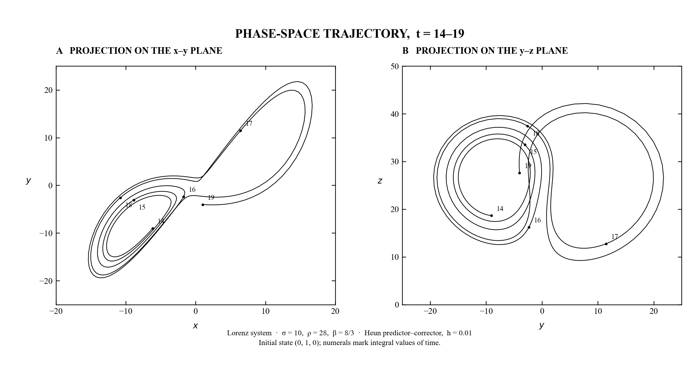

σ, ρ, and β from Lorenz's Figure 2 calculation.
Numerical methods · completed
Reproducing
chaos.
A tested reconstruction of Lorenz's 1963 phase-space figure—using the original parameters, initial condition, fixed timestep, and second-order predictor–corrector method.
RUN / L63-F2 VERIFIED
HEUNPREDICTOR–CORRECTOR
1,900STEPS
0.01TIMESTEP
6/6TESTS PASS
01 / RESULT
Figure 2, reconstructed.
The full trajectory runs from t = 0 to 19. As in Lorenz's paper, only the segment from t = 14 to 19 is projected onto the x–y and y–z planes.

Numerals mark integer values of time. The plotted curve contains 501 states from the historical fixed-step calculation.
VECTOR FILE ↗02 / METHOD
A historical calculation, deliberately.
The goal was not simply to draw the familiar attractor. It was to reproduce the numerical experiment specified in the paper and separately test whether the implementation behaves correctly.
STATE 01
ẋ = σ(y − x)
STATE 02
ẏ = x(ρ − z) − y
STATE 03
ż = xy − βz
The trajectory starts away from all three equilibria.
Explicit trapezoidal predictor–corrector with a fixed step.
A locked, isolated environment makes the result reproducible.
03 / VERIFICATION
Tests before trust.
Visual similarity is not enough. Structural properties and a known exact solution provide independent checks on the equations and integrator.
Three equilibria
The vector field vanishes at the origin and at both signed nonzero fixed points.
Half-turn symmetry
The field respects (x, y, z) → (−x, −y, z), catching subtle sign errors.
Exact z-axis
On the invariant axis, the numerical result tracks z(t) = z₀e−βt.
Second-order rate
Halving the timestep reduces short-time global error by approximately four.
04 / INTERPRETATION
Accuracy and historical reproduction are different objectives.
Chaos amplifies tiny numerical differences. A modern high-accuracy solver can eventually occupy a different point on the attractor while still solving the same system more accurately. That is why this reproduction pairs the historical method with short-time convergence and structural tests—rather than treating long-time pointwise agreement as proof.